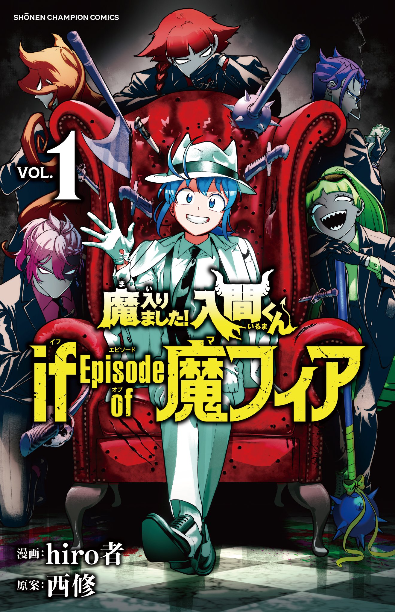

Mairimashita! Iruma-Kun Mafia Au
Rating: 4/5
The art, dynamic poses are a feast for the eyes. Plot is very interesting and the roles taken by the characters are a little twist from the main story.

Genshin Impact
Rating: 4/5
Graphics are 10/10. The ladies all look wonderful, but I hope more effort can be put into the men. The anemo boys are perfect. The lore has been getting better, esp for sumeru and fontaine, but it can be too draggy at times. I love the events, super fun and chill. Somehow, artifact farming is harder than winning 50/50s, which I have lost every time except the first one.

Daytime Star
Rating: 5/5
Art: 10/10
Romance: Wholesome/10
Male Lead: Whole entire forest.
Female Lead: Girlboss
I love this. It's so sweet and healing, I'm getting diabetes and the cure.